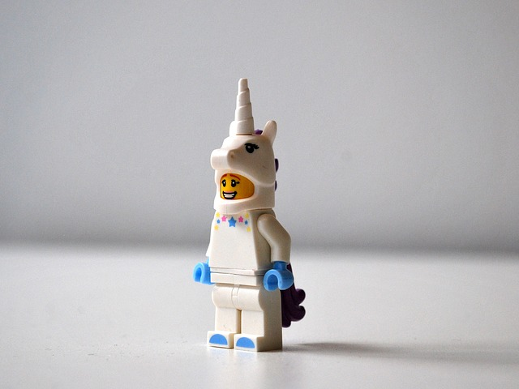

Mythical Creatures
Creatures that are fantasy but should be real
Dragon
The dragon is known to be one of the most fierce mythical creatures out there! But do not fear, not all dragons are viscous fire-breathing monsters whose goal is to torch your village and/or eat you. There are friendly dragons, too. Ever heard of Puff the Magic Dragon? To learn more about dragons, click here.
- Dragon
- Psychedelic
In case you didn't know, dragons are very popular in Pokemon. Below is a table giving examples of some of the different types of Pokemon. Please click here for references.
| Pokemon Name | Pokemon Type(s) | Special Info |
|---|---|---|
| Dratini | Dragon | First dragon pokemon type |
| Dragonite | Dragon and Flying | Very strong pokemon |
| Flygon | Dragon and Ground | Looks a bit like a cricket |
| Latias | Dragon and Psychic | Is the colors purple and red |
| Charizard | Dragon and Flying | One of the most famous dragon pokemon |
The Griffin
The griffin is not only known for being College's mascot, it is also known for being half an eagle and half a lion. Nope, I'm not lion... (bad pun). It has the head and wings of an eagle, but with the powerful behind, hind legs, and adorable tail of a lion. To learn more about griffins, click here.
- Griffin
- Rawr, Tweet
Phoenix
Who could ever picture a creature as mesmerizing as a phoenix? This animal is so noble and has an undying cycle of rebirth and death. It is like reincarnation, but without the ability to change form. Forever a beautiful phoenix who will eventually burn up in flames. A little dramatic? I say so, but to learn even more, click here.

- Phoenix
- Up in flames
Sphinx
Yet another creature that loves the rear of a lion. That is because a sphinx has the head of a human and the body of a lion. For someone who religiously played "Cat World" as a child, being a sphinx would be a dream come true. You have the nobility of the lion's strong body and the ability to produce witty riddles. Some of these creatures even have wings. See if you can figure out what culture usually gave the sphinx wings by clicking here.
- Sphinx
- Nobility
Unicorn
The unicorn is magnificent and pure. Unfortunately, these mythical creatures are often poached by horrible people, like Voldemort. Many magical wands are made from their hairs. To dive even deeper into what unicorns are all about, click here.
- Unicorn
- Purity